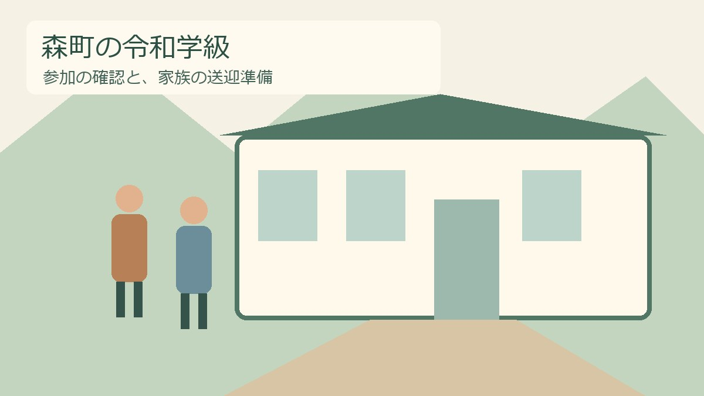
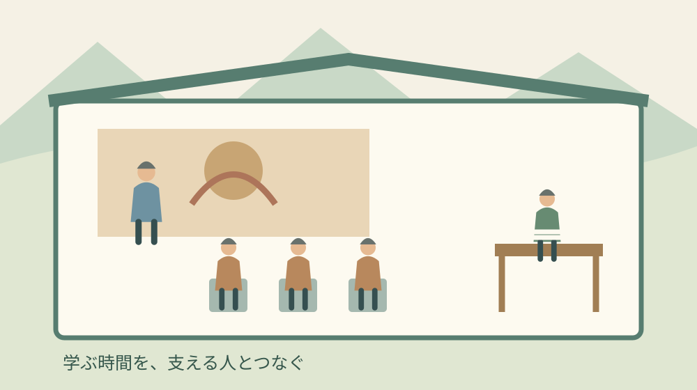
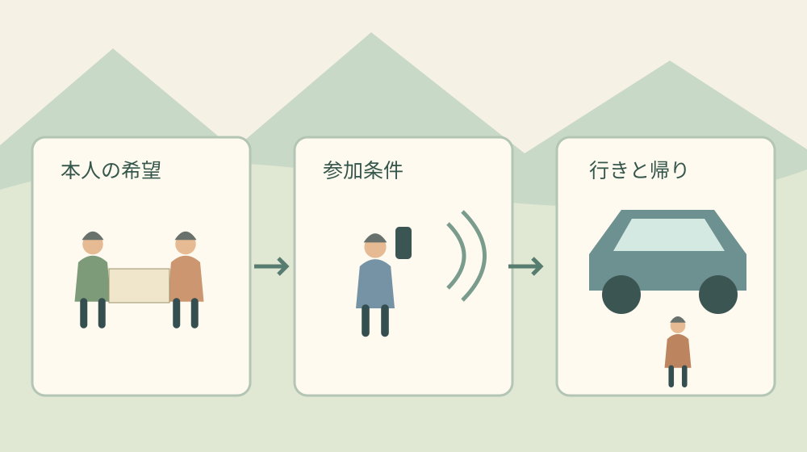

森町の令和学級｜11月の文化講座と参加確認

Q．森町の令和学級、11月の文化講座には今から行けますか？
森町の令和学級は、おおむね65歳以上を対象とする年間8回の講座です。11月12日は「インド文化と古典舞踊」を予定しています。ただし年度の募集期限は4月30日で終了済み。途中参加・単発参加の可否は公表ページでは分かりません。初めて参加を考える方は社会教育係へ確認し、受講中の方は案内と往復の移動を確かめてください。
文化講座の一日は、講師が話す時間だけで成り立つものではありません。案内を届ける人、椅子や資料を整える人、家族の外出を支える人がいます。森町で学ぶ機会を続けている方々の手間を、参加費の数字だけで小さく見たくないと私は考えています。
大石浩之（磐田市／不動産業）です。町の外から暮らしを見るとき、催しがあることと、無理なく通えることを分けて考えます。今回は令和学級の11月の予定を入口に、参加できるかを確認する順番と、ご家族が今日相談できる送迎の段取りを整理します。
11月12日の令和学級は、文化と古典舞踊の講座
森町公式「令和8年度令和学級について」には、2026年11月12日木曜日の学習内容として「インド文化と古典舞踊」が掲載されています。講師は南翔子氏です。本記事は2026年10月31日に町の公表ページを確認して書いています。
令和学級の概要に記載された時間は13時20分から15時までです。会場は森町文化会館の小ホール。午後の講座だから午前中は空いている、とすぐ予定を入れるより、昼食を終えて出発できる時刻を先に家族で合わせる方が、当日の支度を急がずに済むと私は考えます。
対象は「おおむね65歳以上の方」、定員は50名で、応募多数の場合は抽選と案内されています。年齢の表記には幅がありますが、記事を読んだ側で独自の対象年齢を決めることはできません。境目に当たる方や、自分が対象か迷う方は担当係に確認する必要があります。
参加費は年間500円で、1回目に集金する案内です。11月の一講座だけの料金ではありません。定員50名も年度募集の枠を示す数字です。現在の参加人数、欠員、11月に使える席数を表した数字ではないので、空きがあるという読み替えはできません。
令和学級は年間8回の連続講座として組まれています。11月だけを切り取った一般向け公演とは入口が違います。季節の催しを探してこのページにたどり着いた方ほど、「日時が載っているから、その日に行けば入れる」と考える前に、募集欄まで読む必要があります。
講座名から分かるのは、インド文化と古典舞踊を扱うという範囲です。舞踊の流派、実演の長さ、体を動かす体験の有無は、公表ページ本文では確認できません。動きやすい服装が必要なのかなど、参加の支度に関わる疑問は、想像で準備せず案内元へ尋ねるのが確実です。
募集期限は4月30日、途中参加の可否は別の確認
令和8年度令和学級の申込み締切は、2026年4月30日木曜日です。10月31日の時点では、この年度募集の期限は終了しています。公式ページの見出しに学級生募集の文字が残っていても、現在受付中であることの根拠にはなりません。
初めて参加したい方が確認するのは、途中からの受講や一回だけの参加を受け付ける仕組みがあるかです。公式ページには、その可否が記載されていません。締切後だから絶対に入れないとも、席があれば入れるとも、この記事では言い切れません。
問い合わせ先は森町教育委員会の社会教育課社会教育係で、電話番号は0538-85-1112です。「令和8年度の令和学級について、11月12日の講座に初めて参加したい」と伝えれば、年度と催しを取り違えにくくなります。希望を伝えることと申込みが受理されることは別に扱います。
すでに受講している方は、手元の案内と公式の予定が合っているかを確認します。欠席する場合の連絡方法、持ち物、当日の受付開始時刻は、公表本文に詳細がありません。受講時に受け取った連絡があるなら、その内容を先に見て、不明点だけをまとめて尋ねる方法があります。
家族が代わりに電話する場合は、本人が参加を希望しているかを先に話しておくことを私は勧めます。付き添いの相談と受講の申込みは同じではありません。本人の希望、家族が同席したい理由、確認したいことを区別して伝えると、担当者も答える順番を整理しやすくなります。
公表ページに申込フォームのリンクがあることも、追加募集の保証にはなりません。締切を過ぎたフォームへ入力する前に、現在使ってよい手段を担当係に確認してください。二重の申込みや行き違いを避けることは、参加する側だけでなく受付を支える方の手間も減らします。

良い点は、学ぶ予定と相談先を同じページで追えること
森町の令和学級案内は、対象、会場、時間、参加費、連絡先をひとつのページで確認できます。内容への興味が生まれたとき、家族に説明するための材料を集めやすい形です。私は、学ぶきっかけを家の中で相談に変えやすい点を評価しています。
年間の学習内容が並んでいることにも利点があります。文化の話だけを単独で受け取るのではなく、年度を通じて人が集まる場として読むことができます。ただし、予定表があることを、毎回必ず参加しなければならないという義務に置き換える必要はありません。出欠の扱いは主催者に確認します。
参加費が年度単位で明示されている点は、家計の見通しを立てる助けになります。一方で、費用が抑えられているから準備の労力も小さい、ということにはなりません。私は、公表された500円を参加者側の負担額として受け止め、講師や運営の総費用と混同しないようにしたいと思います。
学ぶ側として通うほか、地域で教える役割に興味がある方もいるはずです。別の記事では森の夢づくり大学の教授募集と、続けられる講座設計を扱いました。令和学級と同じ制度ではありませんが、文化を受け取る人と支える人の両方から考える入口になります。
注文したい点は、締切後の相談範囲が読み取りにくいこと
令和学級の公式案内だけでは、年度途中に関心を持った人が相談できる範囲は分かりません。募集期限と年間予定が同じページにあるため、これからの講座を見て参加できると思う方もいるかもしれません。私は、受付終了後の相談先を一文添えるだけでも、読み違いを減らせると考えます。
一文に盛り込む内容は、必ずしも追加募集の約束である必要はありません。「途中参加は受け付けていない」「個別に問い合わせてほしい」など、実際の運用に合う案内で十分です。この記事は町の運用を代弁できないので、そのどちらかを推測して埋めることはしません。
付き添いの入場や、聞こえ方、座る位置への相談も、公表本文では条件が分かりません。一般向けページに個別事情をすべて書くのは難しいと思います。それでも、どの窓口へ、いつまでに希望を伝えるのかが見えると、受け入れる側も当日の急な調整を減らせると私は考えます。
私は、案内を詳しくするほど担当者の仕事が増えるという迷いも持っています。更新する人が限られているなら、長い説明を増やすことが最善とは限りません。問い合わせで繰り返し出る点を短く載せる、変更があった場所を示す。小さく保てる案内の方が続けやすい場合もあると思います。
対案・結論は、参加確認と往復の移動を一枚に分けること
森町の令和学級へ通う準備は、「参加できる条件」と「自宅から往復できる条件」を分けると整理しやすくなります。今日できる小さな一歩は、紙を一枚用意し、本人の希望と未確認の質問を書き出すことです。土曜日のうちに家族で作り、担当係に連絡が取れるときに尋ねる材料にします。
紙の上半分には、講座名、11月12日、13時20分から15時、小ホールと書きます。その横に、受講中なのか初参加希望なのかを記録します。初参加なら参加可否、受講中なら当日の連絡事項を確認する、というように、立場ごとに質問を変えられます。
下半分は移動の欄です。出発する家、送る人、迎える人、連絡がつく電話番号を書きます。送る人と迎える人が同じとは限りません。「家族が行ける」と一括りにせず、行きと帰りを別々に引き受けられるかまで相談すると、片道だけ決まった状態を見落としにくくなります。
予定の終了時刻は15時です。ただし、建物を出て車に乗るまでの時間や、待ち合わせ場所は別に決めます。送迎車をどこに止められるかは、この記事では確認できていません。施設の案内や当日の指示に従い、入口をふさぐ場所で待つ計画にはしないようにします。
家族の送迎が難しい場合も、住所から会場までの移動をひと続きで確認します。駅や停留所まで歩けるか、帰りに利用できる便があるか、乗降時に助けが必要かを整理します。この文章はバスの運行日や時刻を保証するものではありません。利用日を指定して交通事業者の案内を確かめてください。
会場での移動に不安がある方は、小ホールの催しであることを伝えて相談します。森町文化会館の車いす席と観覧前の相談先の記事も入口になりますが、大ホールの固定席の説明をそのまま令和学級へ当てはめることはできません。会場ごとの条件を確かめます。
送り迎えを依頼する日は、同居しているかどうかだけで判断しない方がよいと私は思います。別に暮らす家族でも一度なら動けることがあり、同居でも勤務時間に重なることがあります。実際の負担は、家族の人数ではなく、その日の空き時間と移動距離で変わります。
送迎する人が急に動けなくなったときの連絡も決めておきます。別の人へ頼むのか、その回は休むのか。参加を続けるために、休む判断をあらかじめ含めておく方法もあります。無理な運転や、体調を押しての外出を、文化活動への熱意と引き換えにする必要はありません。

文化会館の案内と、令和学級の連絡は分けて使う
森町文化会館の公式「ご利用案内」は、施設を使う際の共通事項を示しています。発熱や体調不良時は来館・来場を控えること、館内では指定された場所や使用条件を守ることが案内されています。これは令和学級だけの出欠規則ではなく、施設を利用する人への案内です。
文化会館の電話は0538-85-1111、令和学級の問い合わせ先は0538-85-1112です。番号が似ていますが、参加の可否は講座案内に載る社会教育係へ尋ねます。建物や設備の相談が必要なら、担当係から案内された窓口へつなぐ方が、同じ説明を何度も繰り返さずに済みます。
文化会館の貸館予約と、主催されている講座への参加は別の手続きです。令和学級を受講するために、ご家族が小ホールの使用許可申請を出すという意味ではありません。催しを自分で開く場合の手順は、文化会館の利用と準備・撤去時間の記事で分けて扱っています。
家族に残す記録は、確認した答えと日付
令和学級の参加準備で家族に残したいのは、聞く予定の質問だけでなく、確認できた答えと日付です。参加できると回答を受けた場合も、対象の回、付き添いの扱い、必要な手続きまで書きます。「電話したから大丈夫」という記憶だけにしない方が、家族へ引き継ぎやすくなります。
口頭で聞いたことが分からなくなったら、推測で埋めずに確かめ直します。氏名などの個人情報を家族間で共有するときも、誰でも見られる場所へ置く必要はありません。本人と連絡を担う家族が読める場所に、案内とメモを一緒に保管する方法が考えられます。
実家の用事と講座の送迎を同じ日にまとめる場合は、予定を詰め込みすぎないようにします。私は不動産の仕事に関わる立場からも、家の確認や片付けを、本人が楽しみにしている外出の前後へ当然のように足したくありません。まず講座に行きたいという希望を中心に、一日の時間を組みたいと思います。
大石の視点――500円の先にある、通い続けられる条件
森町の令和学級を家族の暮らしにつなぐとき、私は参加費だけで「通いやすい」とは判断しません。年間500円という負担額が明示されていても、本人の希望と、家を出て帰るまでの段取りが合わなければ参加にはつながらないからです。費用の安さだけでは、通える条件は決まりません。
私はこう考えます。家族が案内を一緒に見る場面なら、最初に聞きたいのは「誰が送るか」より「何を聞いてみたいか」です。本人の関心が分かってから、参加条件と移動の順に確かめる。送り迎えの手間だけを先に並べると、楽しみたいという話が出にくくなるかもしれません。これは相談現場で起きた実話ではなく、私が取りたい対応についての意見です。
町に文化の機会があることは、暮らす場所を考えるときの魅力になります。ただし、自宅からの道のりや家族の負担を置き去りにして、施設があるから安心だとは書けません。家を選ぶときと同じように、地図上の近さの先に、実際に動ける一日があるかを見たいと思います。
今日、参加を決め切る必要はありません。11月の講座に関心があるかを本人に聞き、初参加なら担当係への質問を一つ書く。受講中なら、帰りの迎えを誰が担えるかを確かめる。講師や運営の方が用意する時間を、ご家族が無理なく受け取るための一歩は、その程度から始められます。
よくある質問
今から11月の講座に参加できますか？
令和8年度の募集期限は2026年4月30日で終了しています。11月12日の講座予定は掲載されていますが、途中参加や一回だけの参加の可否は公表本文では分かりません。初参加を希望する方は、社会教育係0538-85-1112へ対象の講座名と日付を伝え、参加できるか、手続きが必要かを確認してください。
年間500円なら11月だけの支払いはいくらですか？
公式案内の500円は年間の参加費で、1回目に集金すると記されています。一回分の料金や、途中参加の場合の支払方法は掲載されていません。年間8回だからといって、500円を8で割った額で参加できるわけではありません。参加を相談する際に支払額と時期も確かめ、家族の交通費とは分けて予定を立ててください。
家族の付き添いや送迎はどう確認しますか？
付き添いの入場条件や主催者による送迎の有無は、確認した公表本文では分かりません。必要な支援を社会教育係へ伝え、受講者とは別に付き添えるか確認してください。家族の送迎は行きと帰りを分けて相談し、待ち合わせ場所と連絡先を記録します。小ホールの講座に、大ホールの座席条件をそのまま当てはめないようにします。
出典・確認日
- 令和8年度令和学級について／静岡県森町（2026年10月31日確認）
- 森町文化会館 ご利用案内／静岡県森町（2026年10月31日確認）
講座の予定や制度は変更される場合があります。個別の参加条件は主催者へ、専門的な判断が必要な事項は適切な専門家へご相談ください。